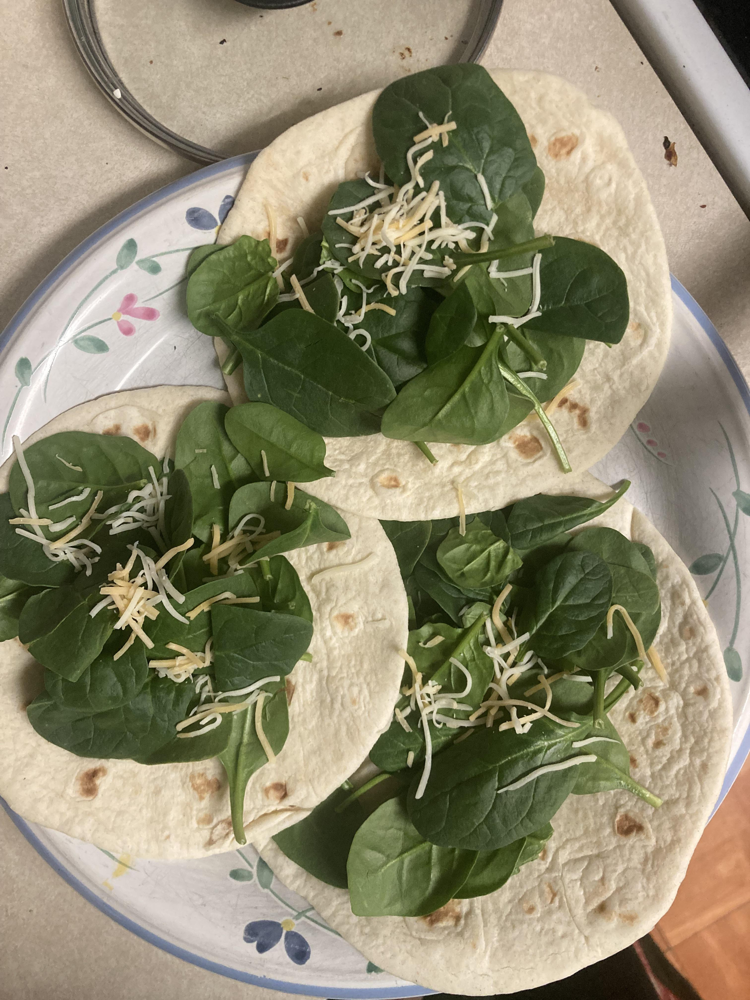

Spinach Burrito Recipe
This spinach and cheese burrito is a quick and easy recipe that requires only three simple ingredients. The combination of melted cheese and fresh spinach makes for a delicious and nutritious filling, while the warm and crispy tortilla adds a satisfying texture to the dish. This burrito is a great option for a healthy and filling meal on the go, or as a simple snack or lunch.

Ingredients:
- 1 large flour tortilla
- 2 cups of fresh spinach leaves
- 1 cup of shredded cheese
Instructions:
- Preheat a large skillet or griddle over medium heat.
- Place the flour tortilla on the skillet and heat for about 30 seconds on each side, or until warm and slightly toasted.
- Place the shredded cheese in the center of the tortilla.
- Top the cheese with the fresh spinach leaves.
- Roll up the tortilla tightly around the filling, tucking in the sides as you go.
- Return the burrito to the skillet and cook for an additional 1-2 minutes on each side, or until the cheese is melted and the tortilla is crispy.
- Cut the burrito in half and serve hot (or cold).
Back to home
Recipe generated by ChatGPT. Ideas from /r/StupidFood